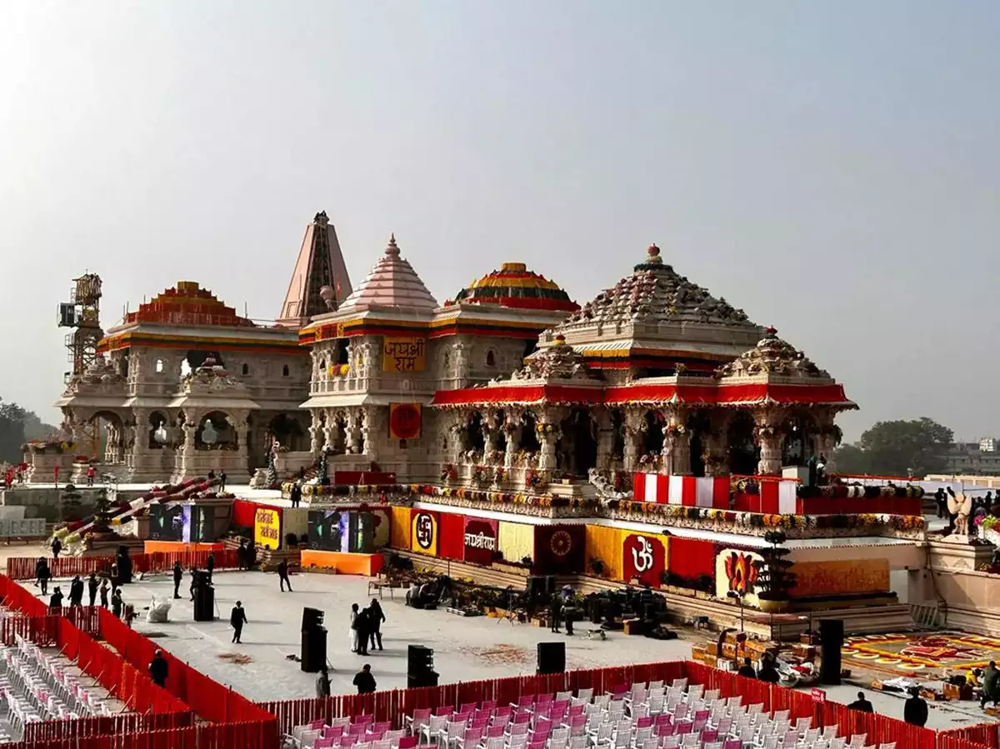
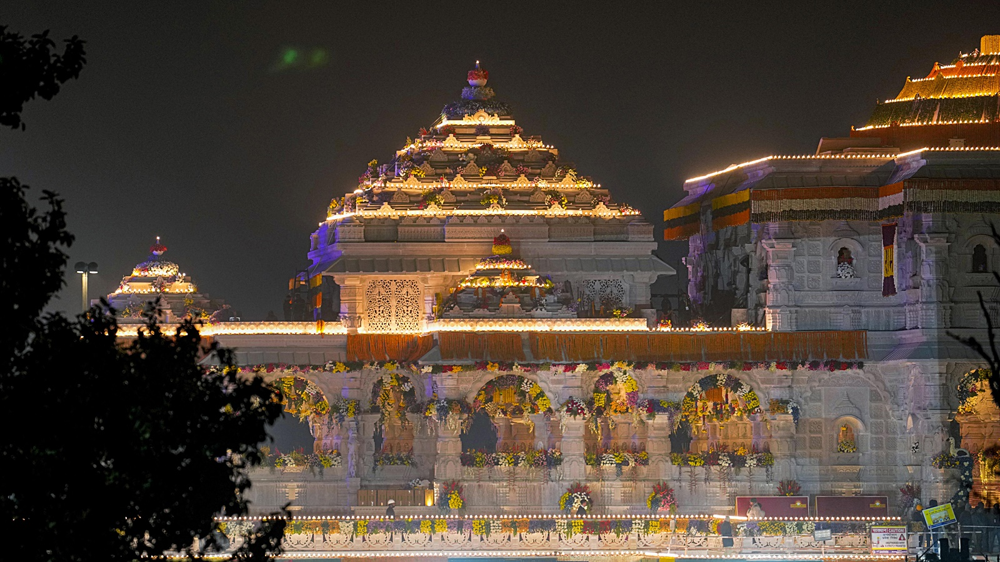
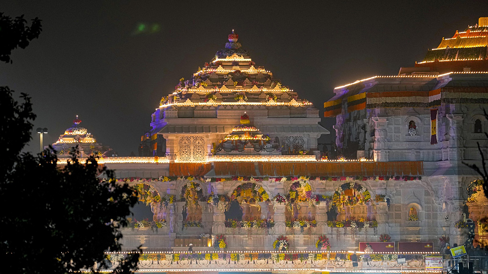
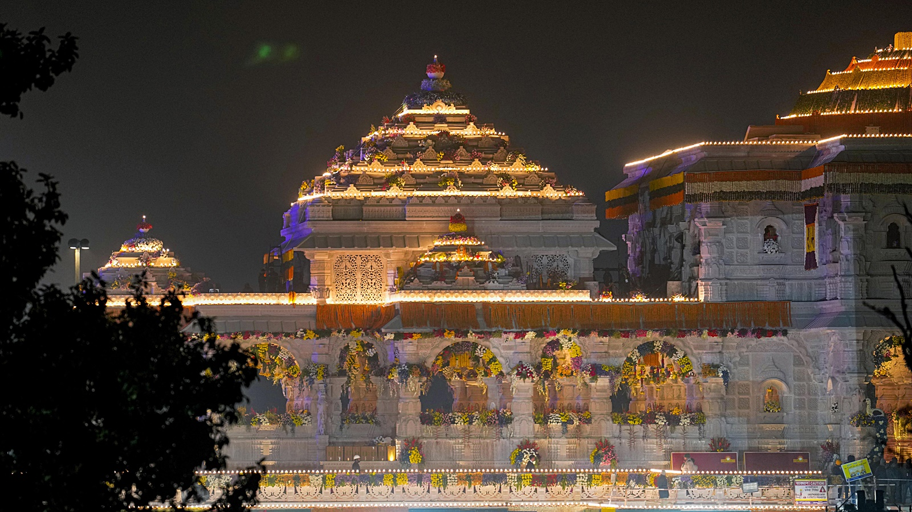
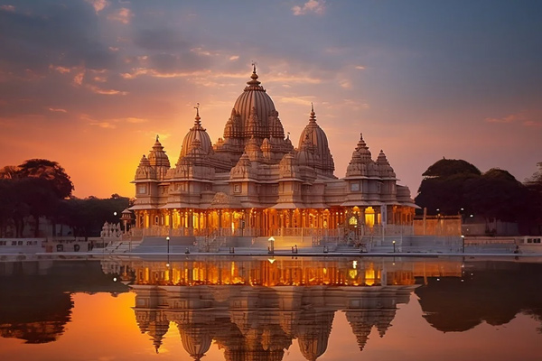
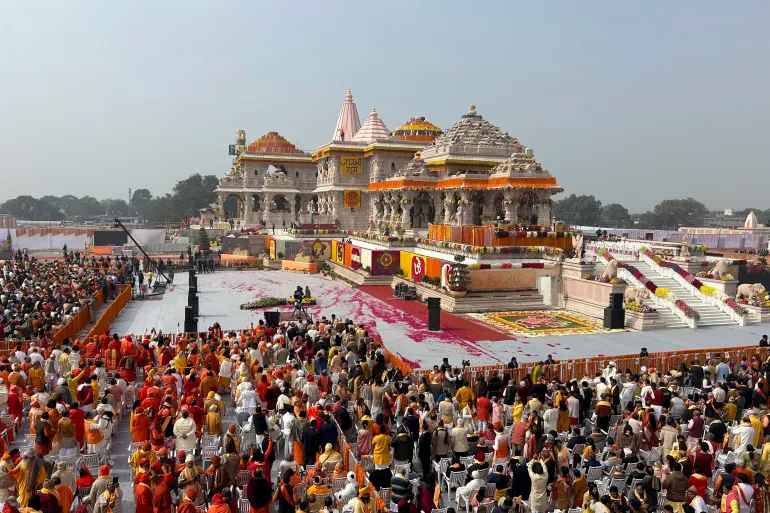
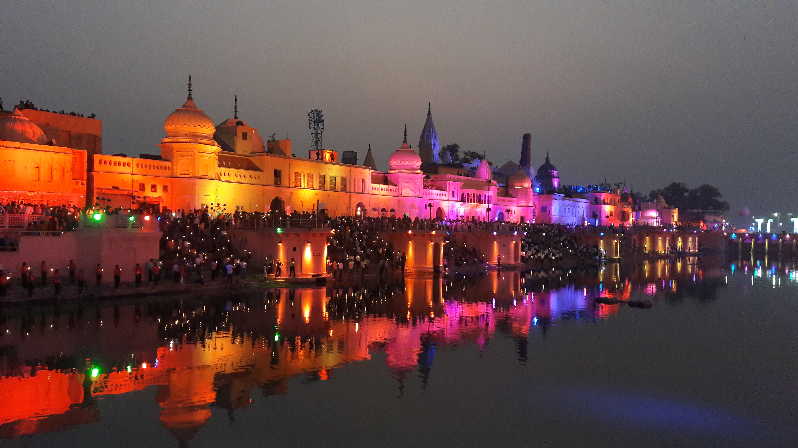
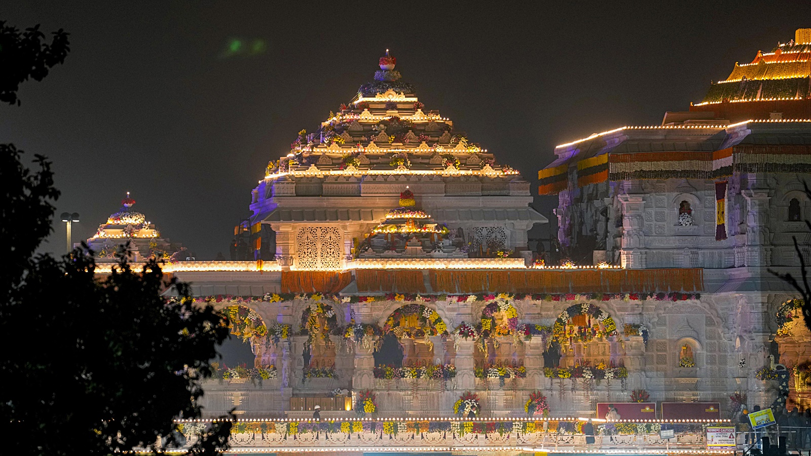

 







The Ram Mandir (lit. 'Rama Temple') is a partially constructed Hindu temple complex in Ayodhya, Uttar Pradesh, India. Many Hindus believe that it is located at the site of Ram Janmabhoomi, the mythical birthplace of Rama, a principal deity of Hinduism. The temple was inaugurated on 22 January 2024 after a prana pratishtha (consecration) ceremony. The site is the former location of the Babri Masjid mosque, which was built between 1528 and 1529. The idols of Rama and Sita were placed in the mosque in 1949, before it was attacked and demolished in 1992. In 2019, the Supreme Court of India delivered the verdict to give the disputed land to Hindus for construction of a temple, while Muslims were given land nearby in Dhannipur to construct a mosque. The court referenced a report from the Archaeological Survey of India (ASI) as evidence suggesting the presence of a structure beneath the demolished Babri Masjid, that was found to be non-Islamic.
